Riesgo por Operación
1–2%
Nunca arriesgues más del 1–2% de tu capital por operación. Con un 2% máximo, puedes perder 20 operaciones seguidas y aún tener el 66% de tu capital intacto.
Estrategias para dejar de ser Pendejo en Trading
Guía exhaustiva de 9 estrategias de trading para oro (XAU/USD), con gestión de riesgo, análisis de sesiones, checklist operativo y plan de práctica. Todo el contenido está basado en conceptos de price action, acción institucional y análisis técnico aplicado al oro.
Las 9 estrategias analizadas en este manual, ordenadas por win rate estimado. Cada estrategia tiene su sección dedicada con reglas de entrada, stop loss, take profit y ejemplos.
| # | Estrategia | Win Rate | Timeframe | R:R Mín. | Dificultad |
|---|---|---|---|---|---|
| 1 | Soporte y Resistencia | 40–60% | H4, D1 | 1:2 | Baja |
| 2 | EMA 13/34 Crossover | 42–62% | M15, H1 | 1:2 | Baja |
| 3 | RSI Divergencia | 45–65% | H1, H4 | 1:2 | Media |
| 4 | CRT (Candle Range Theory) | 55–75% | M5, M15 | 1:2 | Alta |
| 5 | CHoCH + BOS | 50–70% | M15, H1 | 1:2 | Media |
| 6 | Supply & Demand | 52–72% | H1, H4 | 1:2 | Media |
| 7 | London Breakout | 48–68% | M15 | 1:2 | Baja |
| 8 | Volume Profile | 47–67% | H1, H4 | 1:2 | Media |
| 9 | Breakout y Retest | 45–65% | H1, H4 | 1:2 | Baja |
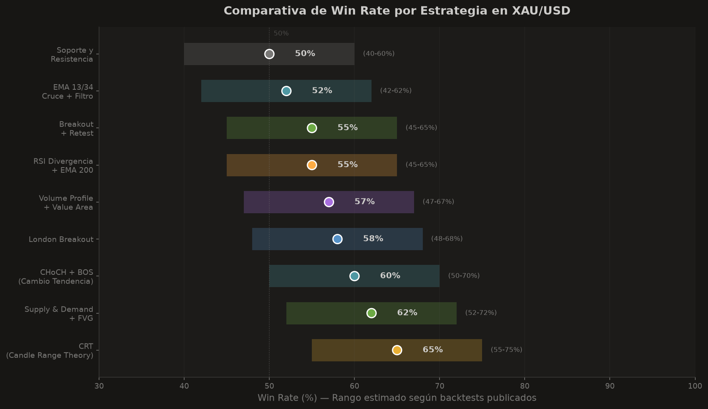
Ninguna estrategia funciona sin gestión de riesgo. La supervivencia en el trading depende de proteger el capital, no de acertar cada operación. Esta sección define las reglas innegociables.
1–2%
Nunca arriesgues más del 1–2% de tu capital por operación. Con un 2% máximo, puedes perder 20 operaciones seguidas y aún tener el 66% de tu capital intacto.
1:2
El ratio riesgo-beneficio mínimo es 1:2. Si arriesgas $100, tu objetivo debe ser ganar $200. Esto permite ser rentable incluso con un win rate del 40%.
3%
Si pierdes el 3% de tu capital en un solo día, cierra la plataforma. Vuelve al día siguiente. Las pérdidas grandes provienen de la venganza (revenge trading).
Tamaño de Posición = (Capital × % Riesgo) / (Precio Entrada − Stop Loss) × Tamaño del Lote
| Win Rate | R:R 1:1 | R:R 1:2 | R:R 1:3 | R:R 1:4 | R:R 1:5 |
|---|---|---|---|---|---|
| 30% | −70.0% | −10.0% | −11.7% | −9.4% | −6.0% |
| 35% | −65.0% | −5.0% | −1.7% | +1.3% | +5.0% |
| 40% | −60.0% | +20.0% | +50.0% | +80.0% | +110.0% |
| 45% | −55.0% | +35.0% | +72.5% | +110.0% | +147.5% |
| 50% | 0.0% | +50.0% | +100.0% | +150.0% | +200.0% |
| 55% | +10.0% | +65.0% | +127.5% | +190.0% | +252.5% |
| 60% | +20.0% | +80.0% | +155.0% | +230.0% | +305.0% |
| 65% | +30.0% | +95.0% | +182.5% | +270.0% | +357.5% |
| 70% | +40.0% | +110.0% | +210.0% | +310.0% | +410.0% |
Retorno neto en R sobre 100 operaciones. Verde = rentable, rojo = pérdida. Con un 40% de win rate y 1:2 ya eres rentable.
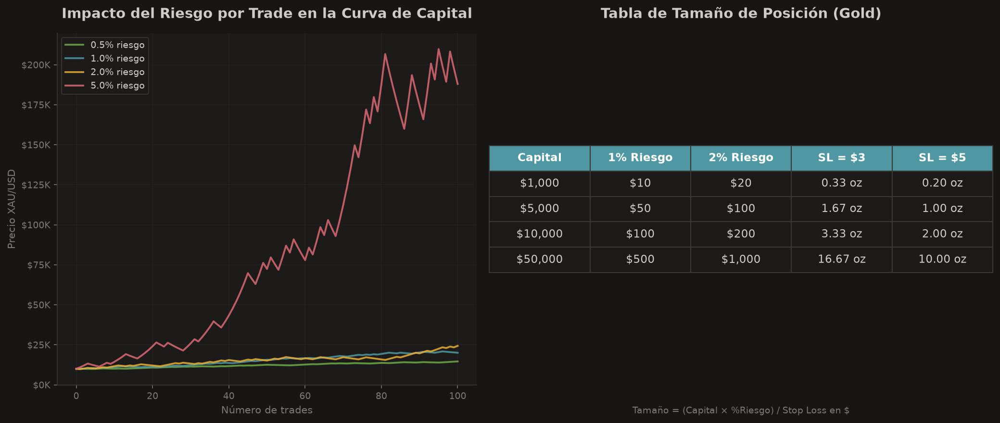
Sigue tu plan. La desviación emocional es la causa nº1 de pérdida. Define tus reglas antes de abrir la plataforma y cíñete a ellas mecánicamente.
No operar también es una posición. La mejor operación es la que no tomas. Espera tu setup; el oro da múltiples oportunidades diarias.
Aceptar la pérdida es parte del juego. Mover el stop loss es el primer paso hacia la ruina. La pérdida planificada es una inversión en información.
Después de una pérdida, el impulso de recuperar es máximo. Regla de oro: después de 2 pérdidas consecutivas, para el día. Mañana es otro día.
El oro es uno de los activos más volátiles y líquidos del mundo. Entender sus características únicas es esencial antes de aplicar cualquier estrategia. Su comportamiento difiere del forex tradicional en volumen, horarios y sensibilidad a eventos macroeconómicos.
El oro puede mover 200–400 pips en un día con alta liquidez. En NFP o FOMC puede mover más de 500 pips. Esto crea oportunidades pero también exige stops más amplios.
En tiempos de incertidumbre geopolítica o económica, el oro se aprecia como activo refugio. Guerras, crisis bancarias y pandemias disparan su demanda.
Existe correlación inversa con el dólar estadounidense (DXY). Cuando el dólar se debilita, el oro suele subir, y viceversa. No es perfecta pero es una de las más fiables.
El oro no genera intereses, por lo que las tasas de interés reales (nominales − inflación) son su mayor driver estructural. Tasas reales negativas son alcistas para el oro.
| Sesión | Horario (UTC) | Volatilidad | Característica |
|---|---|---|---|
| Asia | 00:00 – 07:00 | Baja–Media | Rangos laterales, acumulación. Breakouts falsos frecuentes. |
| Londres | 07:00 – 16:00 | Alta | Máxima volatilidad y volumen. Mejor sesión para oro. |
| Nueva York | 13:00 – 21:00 | Alta | Solape con Londres = pico de liquidez. Datos macro EE.UU. |
| Solape LDN/NY | 13:00 – 16:00 | Máxima | La ventana más activa. Mejores oportunidades. |
Índice del Dólar. Correlación inversa predominante. Vigila el DXY antes de cualquier entrada en oro.
Decisiones de la Fed y expectativas. Subidas de tasas tienden a debilitar el oro; bajadas lo impulsan.
Non-Farm Payrolls (primer viernes de mes). El dato más volátil para oro. Puede mover 300+ pips.
Índice de Precios al Consumidor. Inflación alta suele impulsar el oro como cobertura inflacionaria.
Decisiones de política monetaria y minutos. El tono hawkish/dovish mueve al oro inmediatamente.
Conflictos, guerras, sanciones, crisis bancarias. El oro reacciona como refugio seguro.
La base de todo análisis técnico. Los niveles de soporte y resistencia son zonas de precio donde el mercado ha reaccionado repetidamente. Operar rebotes en estos niveles es la estrategia más fundamental y accesible.
Un soporte es un nivel donde el precio tiende a detener caídas (demanda supera oferta). Una resistencia es un nivel donde el precio tiende a detener subidas (oferta supera demanda). Cuanto más veces el precio toca un nivel sin romperlo, más fuerte es. Estos niveles pueden ser zonas (no líneas exactas) de 3–10 pips en oro.
| Parámetro | Valor |
|---|---|
| Stop Loss | 5–10 pips más allá del nivel |
| Take Profit | Nivel opuesto o 1:2 mínimo |
| Break Even | Tras +1R mover SL a entrada |
El oro toca $2,050 (soporte) tres veces en dos semanas. En el cuarto toque, forma un martillo en H1 con mecha inferior larga. Entras en compra a $2,051. Stop loss en $2,045 (−$6). Take profit en $2,063 (resistencia, +$12). Ratio 1:2. Si el precio no respeta el nivel, pierdes $6 por lote.
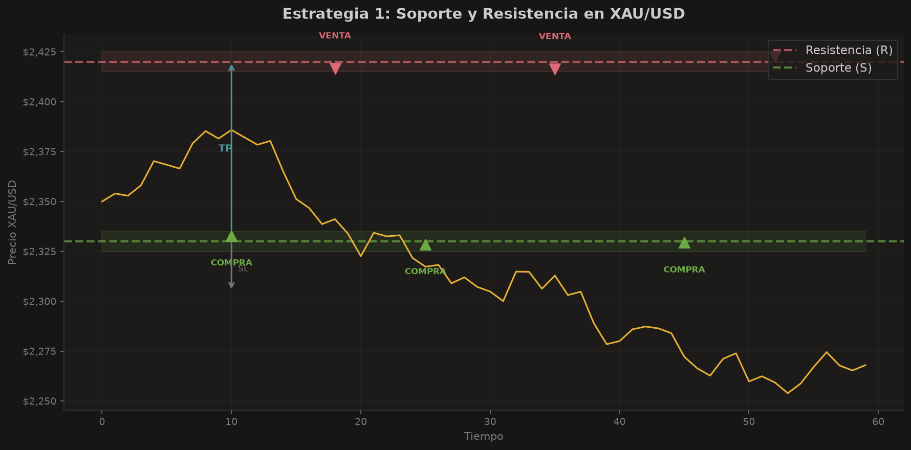
Estrategia de seguimiento de tendencia basada en el cruce de dos medias móviles exponenciales (EMA). La EMA 13 (rápida) y la EMA 34 (lenta) generan señales cuando se cruzan.
Las medias exponenciales dan más peso a los precios recientes que las simples (SMA). Cuando la EMA rápida (13 periodos) cruza por encima de la lenta (34 periodos), genera señal alcista. Al contrario, señal bajista. El oro tiende a respetar las EMA en tendencias fuertes, especialmente la EMA 50 y 200 en timeframes mayores.
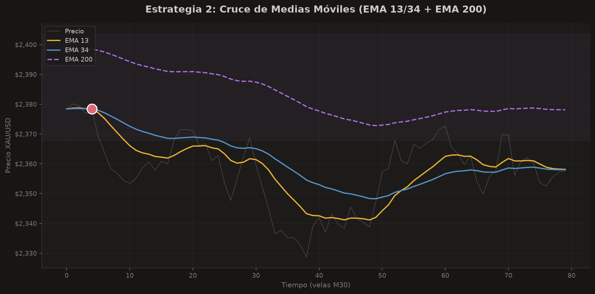
La divergencia del RSI es uno de los indicadores de reversión más potentes. Detecta cuando el impulso del precio se agota, anticipando cambios de dirección antes de que ocurran.
Una divergencia ocurre cuando el precio y el RSI se mueven en direcciones opuestas. Si el precio hace máximos más altos pero el RSI hace máximos más bajos, hay divergencia bajista (el impulso alcista se agota). Si el precio hace mínimos más bajos pero el RSI hace mínimos más altos, hay divergencia alcista (el impulso bajista se agota). El RSI mide la velocidad y magnitud de los movimientos de precio.
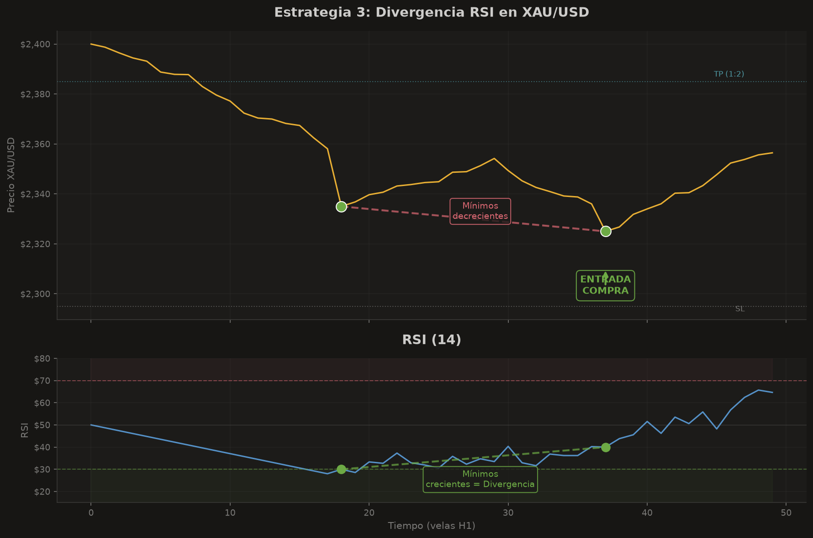
La estrategia más completa y con mayor win rate de este manual. El CRT (Candle Range Theory) es un modelo de lectura institucional del mercado que divide la acción del precio en tres fases: acumulación, manipulación y distribución. Comprender el CRT es entender cómo operan los grandes participantes.
El CRT se basa en tres velas consecutivas que representan el ciclo completo de la acción institucional del precio. Cada vela tiene un rol específico y predecible.
La primera vela establece el rango. Instituciones acumulan posiciones sin mover significativamente el precio. Es una vela de rango definido, ni claramente alcista ni bajista. Define el CRH (Candle Range High) y el CRL (Candle Range Low).
La segunda vela rompe falsamente uno de los extremos del rango (CRH o CRL) para captar liquidez — stops de traders retail y órdenes pendientes. Es el liquidity sweep. El precio penettra el extremo y luego regresa. Esta es la vela donde las instituciones atrapan a los traders inexpertos.
La tercera vela expande en la dirección opuesta a la manipulación. Aquí las instituciones distribuyen sus posiciones y el precio se mueve con fuerza. Es la vela de impulso donde entramos y capturamos el movimiento principal.
El PO3 o Power of Three es el modelo ICT equivalente al CRT. Representa las tres fases del mercado en cualquier timeframe:
El PO3 se puede observar en timeframes de M1 hasta semanal. La clave está en identificar la fase de acumulación y esperar la manipulación antes de entrar en la distribución.
El patrón Turtle Soup es una técnica de reversión que forma parte del CRT. Se produce cuando:
El nombre proviene del experimento de los Turtle Traders. Es uno de los setups de reversión más fiables en oro, especialmente en H1 y H4.
El CSD (Change in State of Delivery) marca el momento exacto en que el mercado cambia de acumulación a expansión. Es el punto de inflexión donde:
El CSD es la confirmación de que la manipulación ha terminado y la distribución ha comenzado. Entrar en el CSD es la entrada óptima del CRT.
| Tipo | Manipulación | Dirección | Descripción |
|---|---|---|---|
| CRT Alcista | Baja (sweep CRL) | Alcista | Sweep del mínimo, distribución hacia arriba. |
| CRT Bajista | Sube (sweep CRH) | Bajista | Sweep del máximo, distribución hacia abajo. |
| CRT Bidireccional | Ambos extremos | Según cierre | Sweep de ambos lados antes de definir dirección. |
| CRT Continuación | Contra tendencia | A favor | Manipulación contra tendencia previa, continuación. |
| CRT Reversión | A favor tendencia | Contra | Manipulación a favor, reversión de tendencia. |
El CRH (Candle Range High) y el CRL (Candle Range Low) son los extremos de la vela de acumulación:
Cuando el precio hace sweep del CRL y regresa, esperamos distribución alcista. Cuando hace sweep del CRH y regresa, esperamos distribución bajista.
| Uso | Timeframe | Notas |
|---|---|---|
| Acumulación | M5, M15 | Mejor para intradía. Rangos más limpios. |
| Acumulación (swing) | H1, H4 | Para operaciones multiday. Más fiable. |
| Manipulación | M1, M5 | Bajar timeframe para ver el sweep en detalle. |
| Distribución | M5, M15 | Capturar el movimiento principal. |
| Tendencia general | H4, D1 | Operar CRT a favor de la tendencia mayor. |
El mercado rompe un swing high/low en la dirección de la distribución. Confirma el cambio de estructura. Es la señal más fuerte de que la reversión es real.
La última vela bajista (en CRT alcista) o alcista (en CRT bajista) antes del movimiento. Zona donde las instituciones colocaron órdenes. Retest del OB = entrada de alta probabilidad.
Hueco de precio dejado por la vela de distribución impulsiva. El precio tiende a rellenar los FVG. Entrar en el FVG tras el CSD es óptimo para mejorar el R:R.
Cuando las tres confirmaciones (MSS + OB + FVG) se alinean tras una manipulación de CRT, la probabilidad de éxito supera el 75%. Esta es la configuración más poderosa del manual.
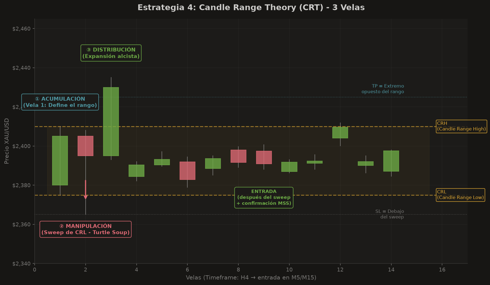
CHoCH (Change of Character) y BOS (Break of Structure) son los dos eventos que definen los cambios de estructura del mercado. Detectarlos permite entrar en reversiones de tendencia con alta probabilidad.
Un BOS ocurre cuando el precio rompe un swing high (en tendencia alcista) o un swing low (en tendencia bajista), confirmando la continuación de la tendencia actual. El BOS valida que la estructura de mercado sigue intacta y es el momento donde los traders de tendencia entran o añaden posiciones.
Un CHoCH ocurre cuando el precio rompe la estructura en dirección contraria a la tendencia previa. En una tendencia alcista, el precio rompe un swing low → CHoCH bajista. En una tendencia bajista, rompe un swing high → CHoCH alcista. El CHoCH es la primera señal de reversión de tendencia y precede al BOS en la nueva dirección.
Antes de un CHoCH válido, suele haber un liquidity sweep: el precio rompe un extremo (capturando stops) y regresa. Este sweep es la manipulación que precede al cambio de estructura. Identificar el sweep es clave para no entrar prematuramente.
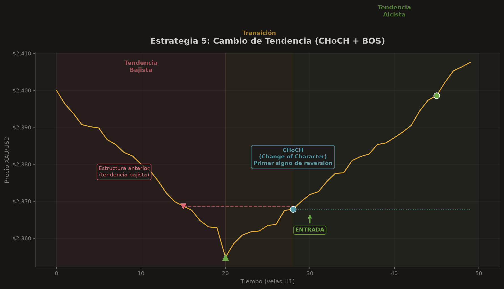
La estrategia de zonas de oferta y demanda identifica dónde los grandes participantes colocan órdenes. Operar desde estas zonas permite entrar en el inicio de movimientos direccional con excelente R:R.
El mercado se mueve entre zonas de supply (oferta — zonas donde vendedores institucionales actúan) y demand (demanda — zonas donde compradores institucionales actúan). Cuando el precio retorna a estas zonas, las órdenes pendientes se activan y generan movimientos direccional fuertes.
Un Order Block (OB) es la última vela bajista antes de un movimiento alcista fuerte (bullish OB) o la última vela alcista antes de un movimiento bajista fuerte (bearish OB). Los OB son zonas de órdenes institucionales:
Un FVG es un hueco de precio dejado por una vela impulsiva. Ocurre cuando la mecha de una vela no se solapa con la mecha de la vela dos posiciones anterior. El precio tiende a regresar a los FVG para "rellenar" el hueco antes de continuar. Los FVG son zonas de entrada de alta probabilidad y mejoran el R:R notablemente.
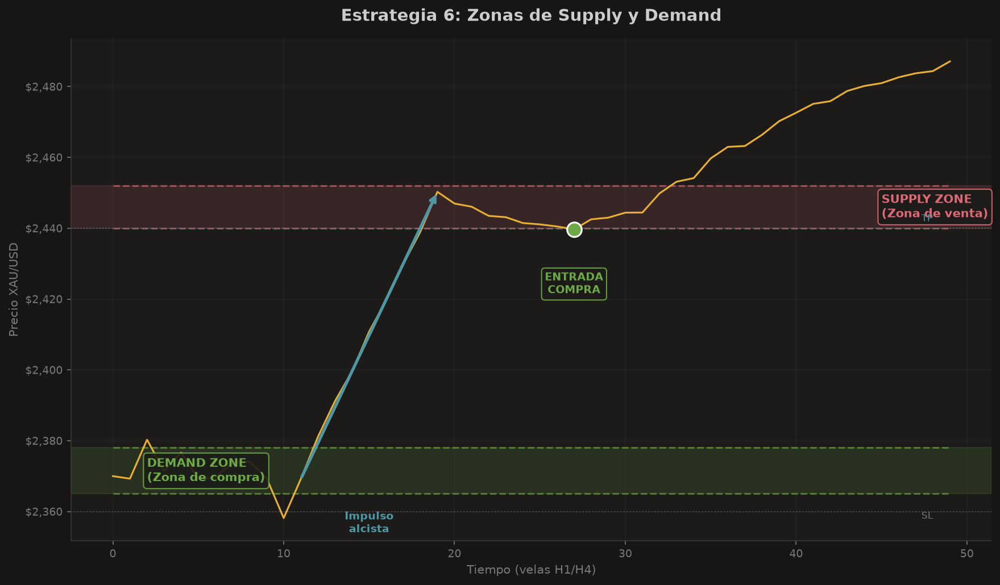
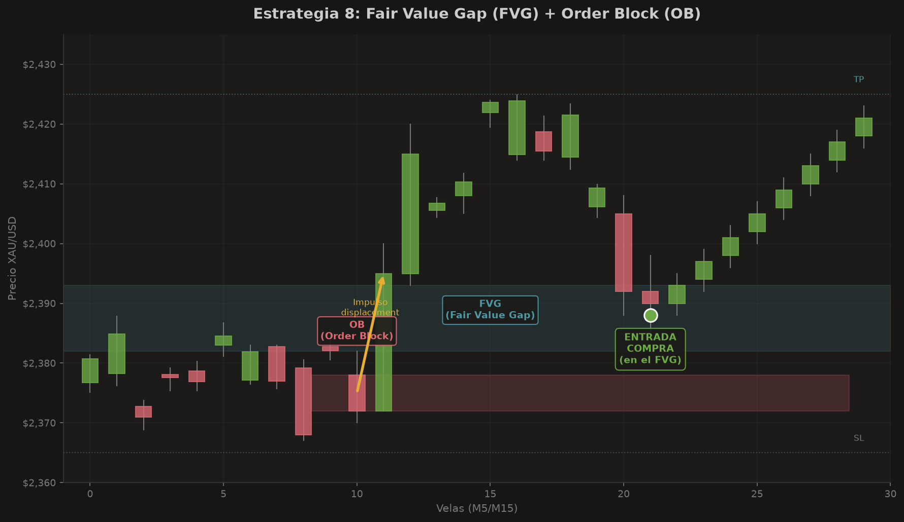
El London Breakout aprovecha el aumento de volatilidad cuando abre la sesión de Londres. El rango asiático define los niveles; el breakout de Londres genera el movimiento.
Durante la sesión asiática (00:00–07:00 UTC), el oro suele moverse en un rango lateral estrecho de 30–60 pips. Cuando abre Londres (07:00 UTC), el aumento de volumen y liquidez provoca un breakout de ese rango. La estrategia consiste en capturar ese movimiento direccional.
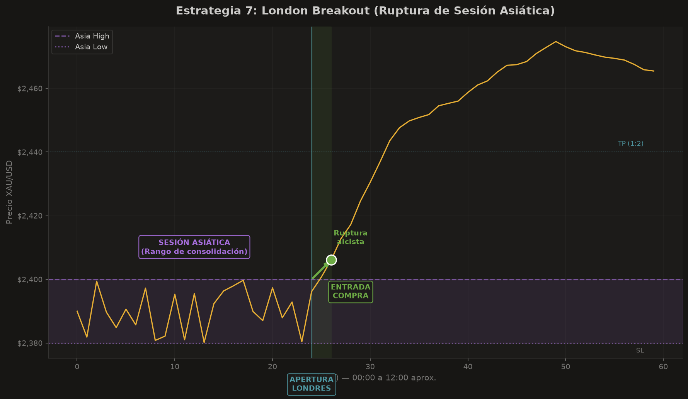
El Volume Profile muestra dónde se ha concentrado el volumen de negociación por nivel de precio, no por tiempo. Permite identificar zonas de aceptación y rechazo del precio.
A diferencia del volumen tradicional (que se muestra en el eje temporal), el Volume Profile muestra el volumen en el eje de precios. Esto revela qué niveles de precio han sido aceptados (alto volumen) y cuáles rechazados (bajo volumen). Es una herramienta institucional.
El nivel de precio con mayor volumen del perfil. Es el punto de equilibrio del mercado. El precio tiende a regresar al POC.
Límite superior del Value Area (zona donde se concentra el 70% del volumen). Resistencia natural cuando el precio está por debajo.
Límite inferior del Value Area. Soporte natural cuando el precio está por encima. Junto con VAH define la zona de valor.
Las Low Volume Nodes (LVN) son zonas de precio con poco volumen. El precio tiende a atravesarlas rápido (no hay interés allí). Las High Volume Nodes (HVN) son zonas de alto volumen donde el precio se detiene. El oro se mueve rápidamente entre HVN y se estanca en ellos. Operar desde POC hacia extremos es la base de esta estrategia.
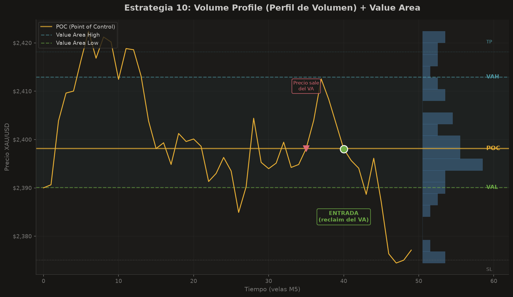
Una de las estrategias más clásicas y fiables. Cuando una resistencia se rompe, se convierte en soporte (y viceversa). Entrar en el retest aprovecha esta conversión de roles.
Cuando el precio rompe una resistencia al alza, los compradores que estaban esperando una corrección para entrar colocan órdenes de compra en ese nivel. La resistencia rota se convierte en soporte. Lo inverso ocurre cuando se rompe un soporte: se convierte en resistencia.
Esta conversión de roles es uno de los principios más sólidos del análisis técnico. No todos los breakouts generan retest, pero cuando lo hacen, la probabilidad de éxito aumenta significativamente.
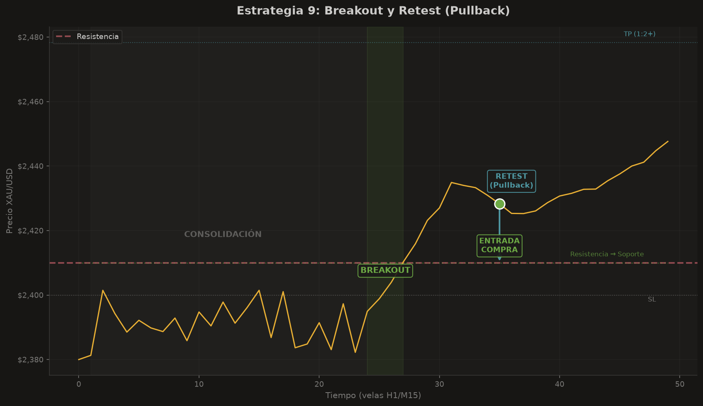
Antes de abrir cualquier operación, verifica cada punto. Si fallas en uno, no operes. La disciplina en el checklist es lo que separa al trader profesional del aficionado.
Estos son los errores que más capital destruyen. Reconócelos y evítalos sistemáticamente.
El error más mortal. Operar sin stop loss es como saltar sin paracaídas. Una sola operación puede destruir tu cuenta en oro.
Ampliar el stop para "darle aire" es racionalizar una mala decisión. El stop original fue calculado por una razón. Respétalo.
Usar lotes demasiado grandes para tu capital. En oro, la volatilidad amplifica el apalancamiento. Un movimiento de 50 pips puede liquidarte.
Entrar justo antes de NFP/CPI/FOMC sin plan es juego de azar. El spread se ensancha, el slippage devora y la dirección es impredecible.
Después de una pérdida, intentar recuperarla inmediatamente con una operación mayor o sin setup. Es el camino más rápido a la ruina.
Operar contra la tendencia de H4/D1 para capturar un movimiento de M15. Nadar contra corriente es agotador y costoso.
Operar sin registrar. Sin datos no hay mejora. No puedes corregir lo que no mides. El journal es tu mejor profesor.
Overtrading. Cada operación tiene coste (spread, comisión, riesgo). Más operaciones no significa más dinero, suele significar más pérdidas.
Desviarse del plan en el calor del momento. Si tu plan dice entrar con confirmación y entras sin ella, has roto tu propia regla.
Operar oro sin mirar el dólar es como conducir con un ojo cerrado. La correlación inversa del DXY es tu brújula estructural.
La teoría sin práctica es inútil. El trading es una habilidad que se desarrolla con repetición deliberada, backtesting sistemático y registro meticuloso.
Lee y comprende cada estrategia. Identifica cuál se adapta a tu personalidad y horario. No operes todavía. Estudia los gráficos de este manual hasta identificar los patrones con facilidad.
Retrocede 6–12 meses en los gráficos. Aplica la estrategia elegida operación por operación. Registra cada trade. Necesitas mínimo 100 operaciones de backtest para tener datos estadísticamente significativos.
Opera en cuenta demo durante 1–3 meses. Tu objetivo no es ganar dinero, sino demostrar que puedes seguir el plan con disciplina. Si eres rentable en demo, pasa a real con lotes mínimos.
Opera con dinero real pero lotes mínimos (0.01). La emoción del dinero real cambia todo. Aquí validas tu psicología. Período: 2–3 meses con resultados consistentes.
Aumenta gradualmente el tamaño de lote solo si tu win rate y R:R lo justifican. Nunca dobles el tamaño tras una pérdida. Escala tras semanas de consistencia, no tras una operación ganadora.
Cada semana, revisa tu journal. Identifica patrones: ¿qué setups ganan más? ¿qué horario es tu mejor? ¿qué errores se repiten? La revisión semanal es donde realmente mejoras.
| Campo | Descripción | Ejemplo |
|---|---|---|
| Fecha/Hora | Cuando se abrió la operación | 2025-07-29 13:15 UTC |
| Estrategia | Cuál estrategia se aplicó | CRT |
| Dirección | Compra o venta | Compra |
| Timeframe | Timeframe principal | M15 |
| Precio Entrada | Nivel de entrada | $2,050.00 |
| Stop Loss | Nivel de SL | $2,045.00 |
| Take Profit | Nivel de TP | $2,060.00 |
| R:R | Ratio riesgo-beneficio | 1:2 |
| Tamaño Lote | Lotes operados | 0.10 |
| Riesgo ($) | Dólares arriesgados | $50 |
| Resultado | Ganancia/Pérdida en R | +2R |
| Sesión | Sesión de trading | London/NY overlap |
| Notas | Contexto, emociones, observaciones | Sweep CRL claro, MSS confirmado |
| Captura | Screenshot del gráfico | trade_001.png |
Este manual compila conceptos de price action, análisis técnico clásico y metodologías de trading institucional (ICT). Los win rates son estimaciones basadas en experiencia profesional y datos históricos, no garantías de rendimiento futuro.